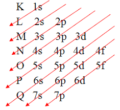

Conceito
Distribuição eletrônica se consiste na distribuição dos elétrons nas camadas de um átomo.
1s² -> 1 - > camada,s -> subnível,² -> número de elétrons
Teoria do octeto
A regra do octeto, fundamentada na chamada teoria do octeto, é uma regra química simples, segundo a qual os átomos tendem a combinar-se de modo a ter, cada um, oito elétrons na sua camada de valência, ficando com a mesma configuração eletrônica de um gás nobre.
Diagrama de Linus Pauling
S consiste em um diagrama com a ordem correta para efetuar a distribuição eletrônica.
Capacidade máxima de cada subnível:s=2,p=6,d=10,f=14.
Números quânticos
Eles têm a função de localizar os elétrons na eletrosfera de um átomo, motivo pelo qual não existem elétrons que tenham os quatro números quânticos iguais.
Número quântico principal(n)
É o número quântico que indica a camada do elétron,podendo variar de 1 a 7.
Número quântico secundário(l)
É o número quântico que se refere a qual subnível o elétron está,no caso temos:s=0,p=1,d=2,f=3.
Número quântico magnético(m)
Se refere a qual orbital ele está,cada orbital suporta dois elétrons,podendo ser:
Caso o subnível seja p,temos:1 orbital e número quântico magnético sendo 0.
Caso o subnível seja p,temos:3 orbitais e número quântico magnético podendo ser -1,0,1.
Caso o subnível seja d,temos:5 orbitais e número quântico magnético podendo ser -2,-1,0,1,2.
Caso o subnível seja f,temos:7 orbitais e número quântico magnético podendo ser -3,-2,-1,0,1,2,3.
Número quântico spin(s)
Diz em que sentido o elétron está girando.Caso seja horário ele é:+1/2,caso seja anti-horário é:-1/2.
Isótopo,isóbaro e isótono
Isótopo
Conceitualmente, isótopos são átomos que possuem o mesmo número de prótons, ou seja, são espécies distintas do mesmo elemento, diferindo apenas no número de massa e de nêutrons.
Isóbaro
Quando dois átomos possuírem o mesmo número de massa, eles serão classificados como isóbaros.
Isótono
Isótonos são átomos que possuem números atômicos (Z) e de massa (A) diferentes, mantendo o mesmo número de nêutrons.